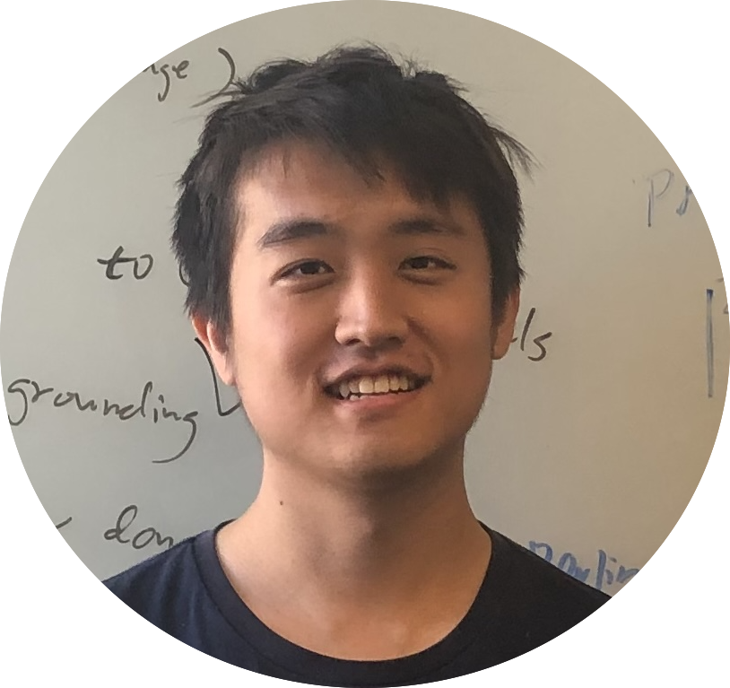
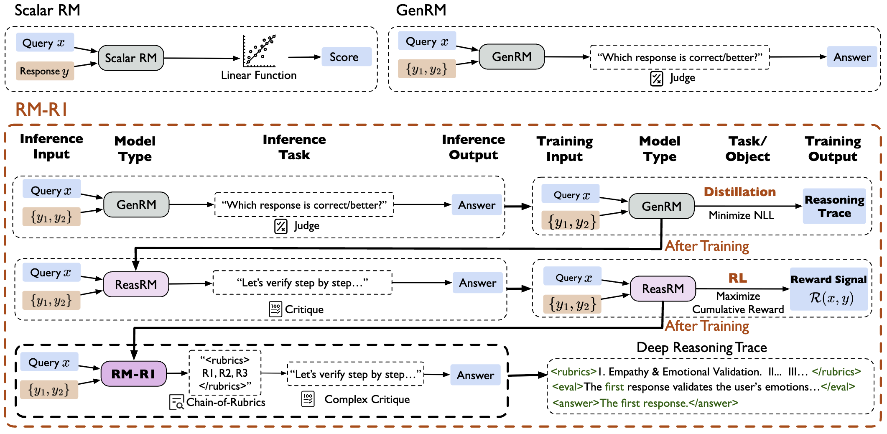
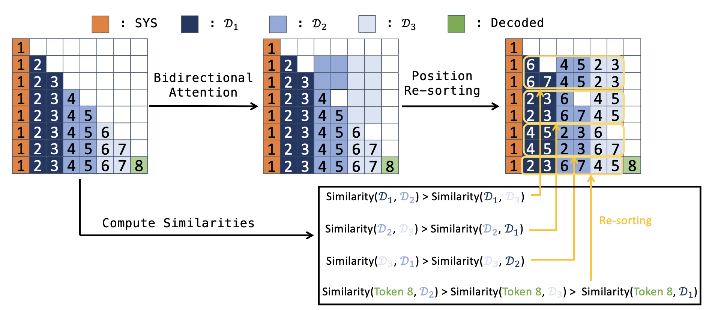
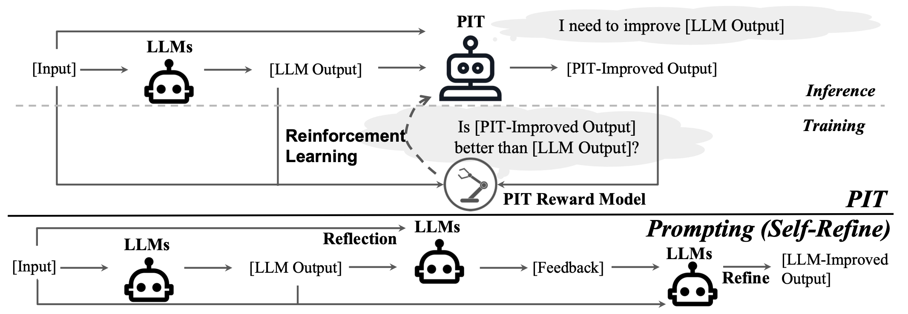

|
Ziqi Wang (王子奇)
I completed my Ph.D. at the University of Illinois Urbana-Champaign, advised by Prof. Heng Ji and Prof. Tong Zhang.
I interned at Google, Meta, and Yutori during my Ph.D. study, where I was fortunate to be advised by Dr. Crick Wu, Dr. Le Hou and Rui Wang. Before my Ph.D. study, I obtained a Bachelor's Degree in Computer Science at Tsinghua University, where I was fortunate to work with Prof. Zhiyuan Liu, Prof. Xiaolin Hu, Prof. Minlie Huang, and Prof. Xiang Ren at the University of Southern California.
Email /
Google Scholar /
Linkedin
|

|
Selected Publications
* denotes equal contribution.
|
|

|
RM-R1: Reward Modeling as Reasoning
Xiusi Chen*,
Gaotang Li*,
Ziqi Wang*,
And other 9 authors.
Preprint, 2025
Paper
Reward model with thinking improves the rewards accuracy.
|
|

|
Eliminating Position Bias of Language Models: A Mechanistic Approach
Ziqi Wang,
Hanlin Zhang,
Xiner Li,
Kuan-Hao Huang,
Chi Han,
Shuiwang Ji,
Sham M. Kakade,
Hao Peng,
Heng Ji
ICLR, 2025
Paper
/
Twitter
We propose a method to eliminate the position bias in LMs, which help LMs to better conduct reasoning.
|
|

|
Enabling Language Models to Implicitly Learn Self-Improvement
Ziqi Wang,
Le Hou,
Tianjian Lu,
Yuexin Wu,
Yunxuan Li,
Hongkun Yu,
Heng Ji
ICLR, 2024
Paper
/
Slides
/
Twitter
Teaching models self-improvement with reinforcement learning.
|
The website is adapted from Jon Barron. Last update: Nov, 202.
|
|